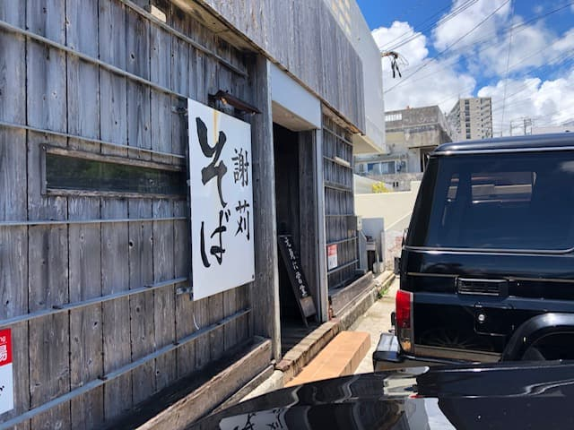
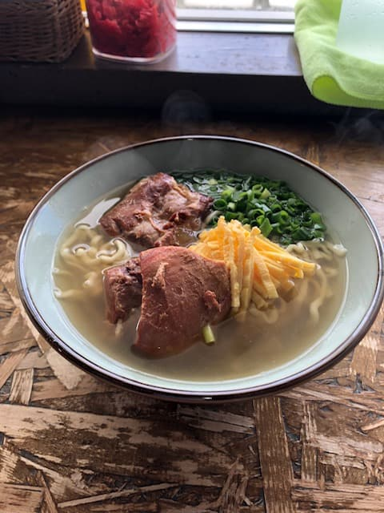
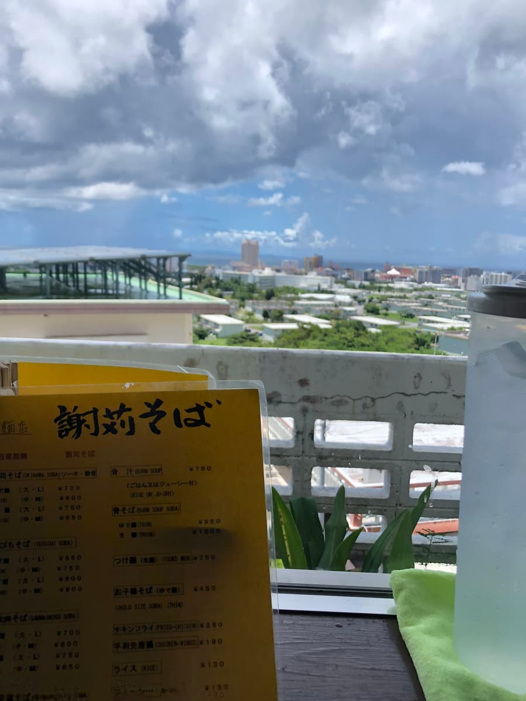

2022.8に食べました😊

お昼時に行ったこともあり、お客さんで行列していました。店の前の駐車場が満杯でしたので、向かいにある「謝苅公園」の駐車場に停め、少し歩いて店内に入りました😊
今回は店名と同じ「謝苅そば」を注文。

カツオ出汁のあっさり系のスープに麺は「ゆで麺」「生麺」選べるタイプで生麺を選択。ソーキも柔らかく大ぶりです。北谷町の高台にお店があるのでカウンター席からは、遠くに海（美浜辺り）も見える景色です😊

また、店内にはｂリーグ（バスケ）の琉球キングスの選手や芸能人のサインでいっぱいです😁 今日も行列だったので人気店ですね。
評価（10点/15点）：生麺、スープとも普通に美味しいのですが、残念ながら注文してから出てくるまでがこれまで食べてきたお店に比べてダントツに遅かったです(T_T) 他店でも行列が出来ていたのですが、注文してからは比較的早く出てきたので、謝苅そばさんの遅さが際立ってしまい残念だと思いました。
麺 ：★★★✬☆（3.5）
スープ：★★★✬☆（3.5）
具 ：★★★☆☆（3）